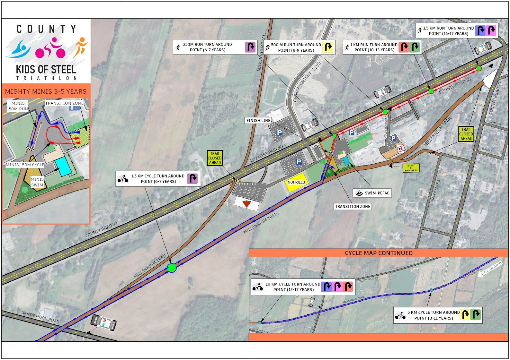
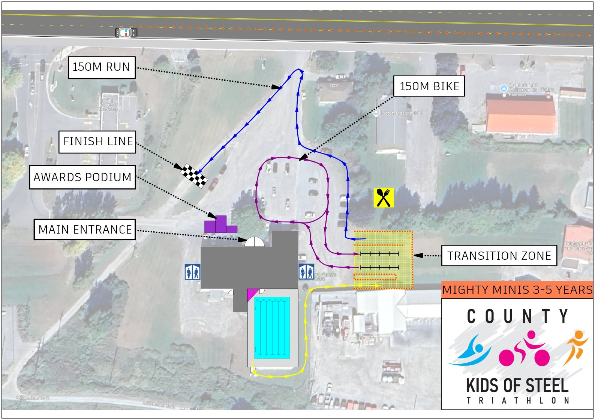

2026 Course Maps
The first event will begin in the Prince Edward Fitness and Aquatic Centre (PEFAC) pool, followed by the bike loop running West along the Millenium Trail behind PEFAC and back. Depending on your distance there will be zero, one, or two road crossings. Both road crossings will have police presence to guide traffic, volunteers, ample signage, and additional safety measures in place. You will then complete your triathlon on the running course, leaving from the transition zone on PEFAC grounds, heading East on Main St. and back down through the finishers chute and across the finish line. We have many volunteers along the route to help you with your race and ensure safety measures are being followed from start to finish. You are responsible to know where your turn around will be, so we suggest you check the maps carefully, volunteers will also be there to help you. Turn arounds will be clearly marked with colour-coded signage which match the child’s bib colour ~ so look out for them!

ROUTE MAP
